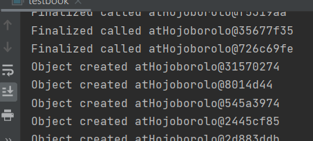

ফাইনালাইজ মেথড
জাভায় কোন destructor নেই। finalize নামে একটি মেথড আছে যা অনেকটা destructor এর মত। তবে এটি destructor নয়। যখন মেমোরি সঙ্কট দেখা দেয় তখন finalize মেথডটি java virtual machine দ্বারা automatically কল হয়। finalize মেথড যে কাজটি করে - যেসব অবজেক্ট আর প্রয়োজন হবে না সেগুলোর মেমোরি ফাকা করে দেয়।
testbook.java
|
class Hojoborolo{ |
এখানে একই ফাইলে দুটি ক্লাস তৈরি করেছি। আগে বলেছিলাম যে একই ক্লাস এ দুইটি ক্লাস তৈরি করা যায়। Hojoborolo নামে একটি ক্লাস তৈরি করেছি। তার মধ্যে কন্সট্রাক্টর তৈরি করেছি আর finalize মেথড কে ওভাররাইড করেছি। constructor আর finalize মেথড এর ভেতরে প্রিন্ট করেছি যাতে বোঝা যায় কখন কে কল হচ্ছে।
Testbook ক্লাস (এটি এই ফাইলের মেইন ক্লাস) এর ভিতরে একটি while লুপ infinite সংখ্যক বার চালিয়েছি যাতে আমরা অসংখ্য অবজেক্ট তৈরি করতে পারি।
এবার যদি কোডটি রান করি তাহলে দেখতে পাবো যে অবজেক্ট তৈরি হচ্ছে আর একটু পর পর finalize হচ্ছে।

উল্লেখ্য, এখানে this একটি রেফারেন্স দেয়। এটি কিন্তু মেমোরি অ্যাড্রেস নয়। জাভায় আমরা সরাসরি মেমোরি নিয়ে কাজ করতে পারিনা।
Created with the Personal Edition of HelpNDoc: Transform Your Documentation Workflow with HelpNDoc's Intuitive UI